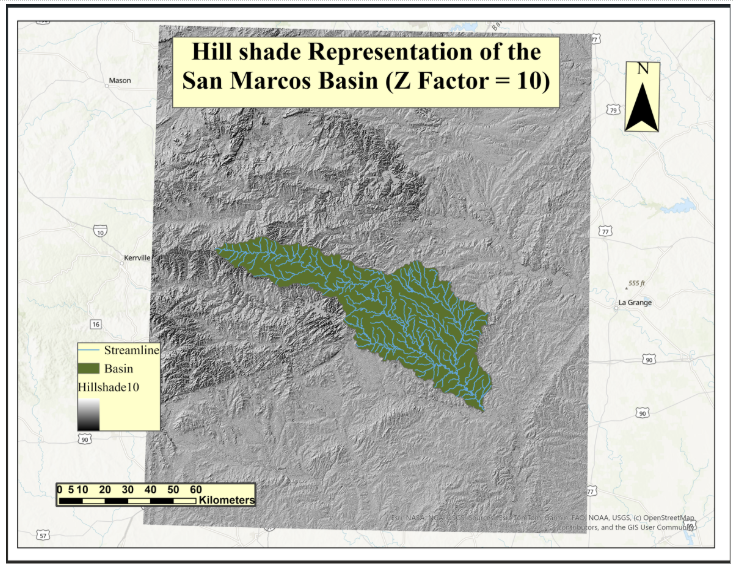
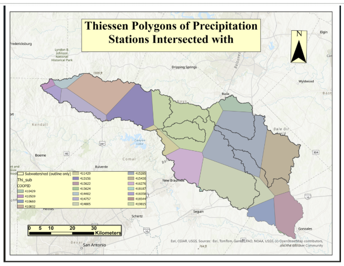
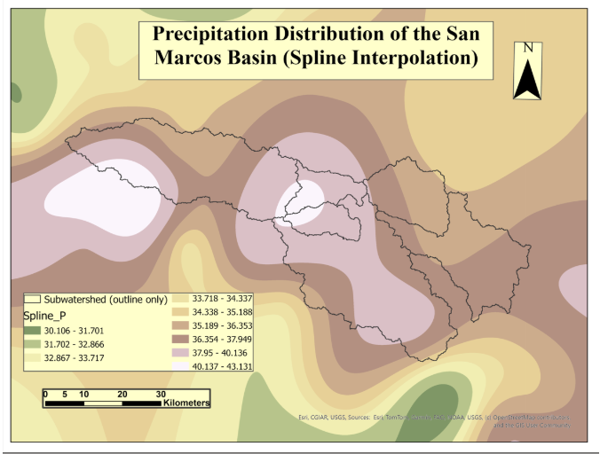
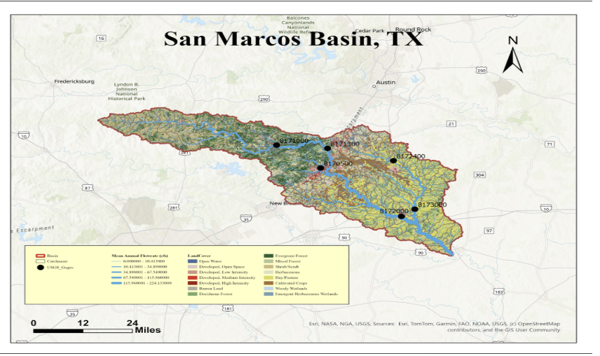
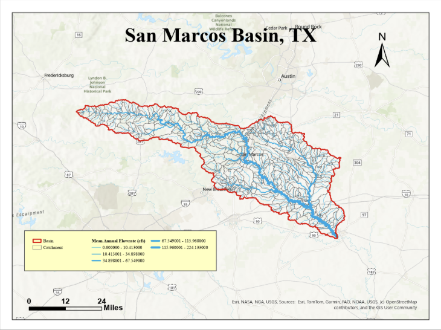
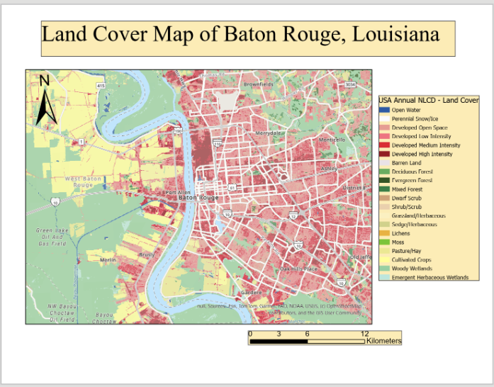
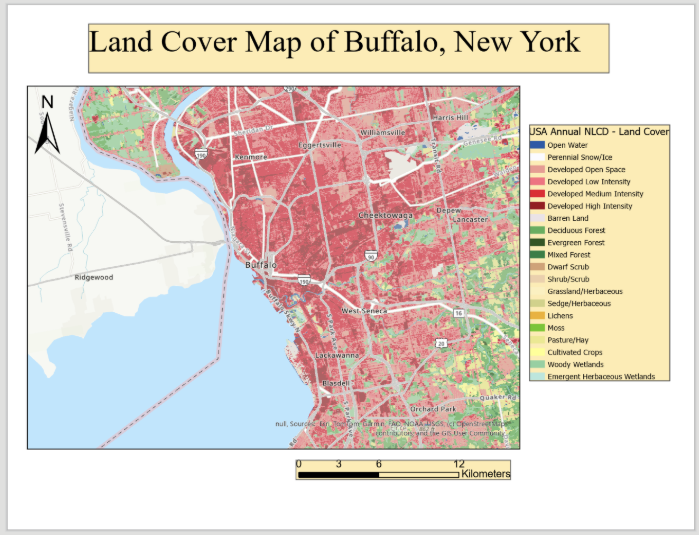
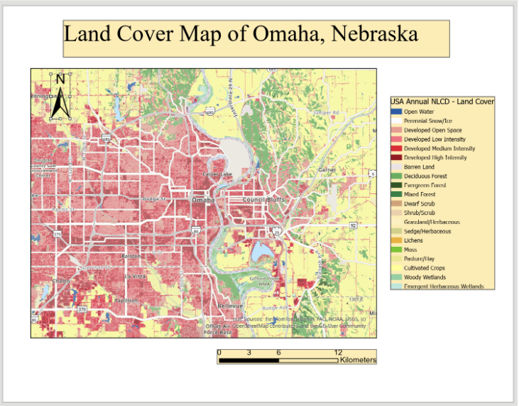
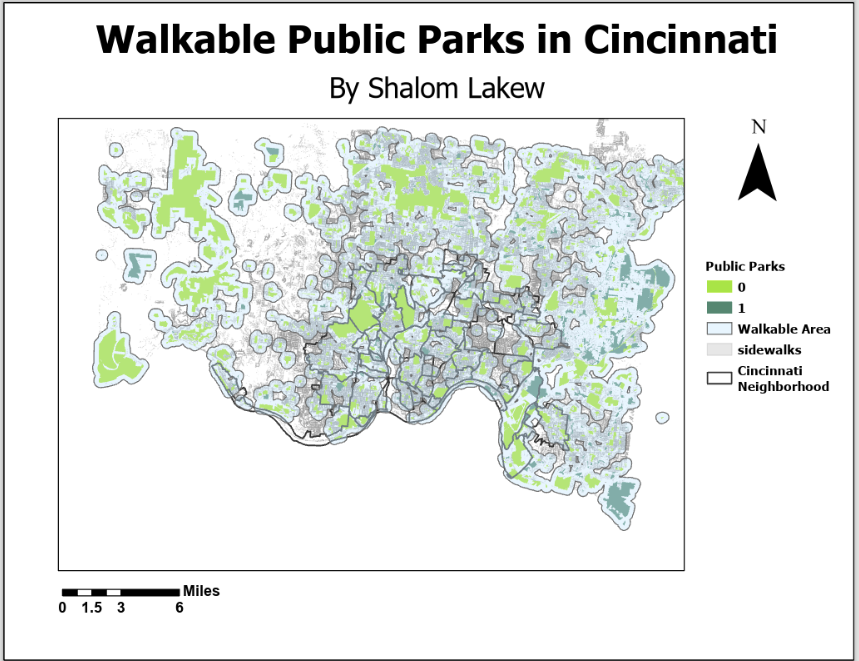

GIS Projects
This portfolio highlights selected GIS projects focused on hydrology, environmental analysis, land-cover mapping, and urban spatial analysis. My work uses GIS to examine environmental patterns and communicate spatial information through maps and geospatial analysis.
1. Watershed Terrain and Precipitation Analysis
San Marcos Basin, Texas

Terrain visualization of the San Marcos Basin using elevation and hillshade analysis.
Project Overview
This project examined terrain and hydrologic characteristics of the San Marcos Basin using Digital Elevation Model (DEM) data. Raster-based spatial analysis was used to calculate slope, aspect, flow direction, and hydrologic slope.
ArcGIS ModelBuilder was used to automate terrain-processing operations. Zonal statistics were used to examine elevation characteristics across subwatersheds, while Thiessen polygons and spline interpolation were used to evaluate spatial variation in precipitation.
Precipitation Analysis


Skills: ArcGIS Pro, DEM analysis, raster analysis, ModelBuilder, zonal statistics, hydrologic analysis, Thiessen polygons, spline interpolation, and terrain visualization.
2. Watershed Database Development and Hydrologic Mapping
San Marcos Basin, Texas

Integrated watershed map showing land cover, catchments, stream flowlines, basin boundaries, and USGS stream gauge locations.
Project Overview
This project developed a GIS database for the San Marcos Basin by integrating multiple environmental and hydrologic datasets. The database included basin and subwatershed boundaries, catchments, stream networks, land-cover data, and USGS stream gauge stations.
NLCD land-cover data were analyzed to examine environmental characteristics of the basin. Flowlines were symbolized using mean annual flow to visualize differences within the drainage network.
Stream Network

Stream flowlines and catchments illustrating drainage structure and hydrologic connectivity within the basin.
Skills: Geodatabase development, data integration, hydrologic mapping, NLCD land-cover analysis, watershed analysis, stream-network visualization, and cartographic design.
3. Urban Land Cover Analysis
This project compared land-cover patterns in Baton Rouge, Louisiana; Buffalo, New York; and Omaha, Nebraska. NLCD data were used to examine differences in urban development, vegetation, wetlands, agricultural land, and other land-cover classes.
Baton Rouge, Louisiana

Land-cover distribution in Baton Rouge showing developed areas, vegetation, wetlands, water, and surrounding land uses.
Buffalo, New York

Buffalo displays extensive urban development with surrounding vegetation, open space, and agricultural land.
Omaha, Nebraska

Omaha's developed metropolitan area transitions into agricultural and vegetated land surrounding the urban core.
Key Finding
The comparison demonstrates how urban form and surrounding land cover differ geographically. Baton Rouge combines dense development with wetlands and vegetation, Buffalo contains extensive developed land around its urban core, while Omaha transitions more clearly from urban development into agricultural land.
Skills: NLCD land-cover analysis, environmental GIS, urban GIS, comparative spatial analysis, remote-sensing interpretation, and cartographic visualization.
4. Cincinnati Park Accessibility Analysis
Cincinnati, Ohio

GIS analysis of walkable access to parks and green spaces in Cincinnati.
Project Overview
This project examined access to public parks and green spaces across Cincinnati. Buffer analysis was used to represent areas within walking distance of parks and to identify geographic differences in park accessibility.
The analysis showed stronger access to parks in portions of central and southern Cincinnati, while some outer areas showed more limited access to nearby green space or pedestrian infrastructure.
Skills: Buffer analysis, urban GIS, accessibility analysis, spatial analysis, thematic mapping, and cartographic design.
GIS Programming
Python GIS coursework is currently in progress. Programming and geospatial automation projects will be added as they are completed.